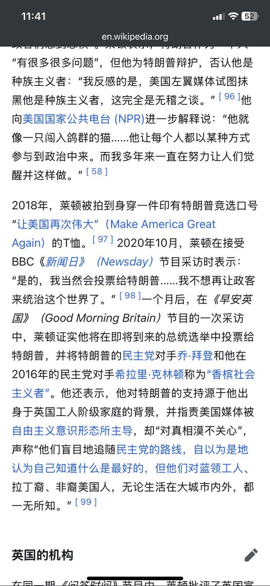
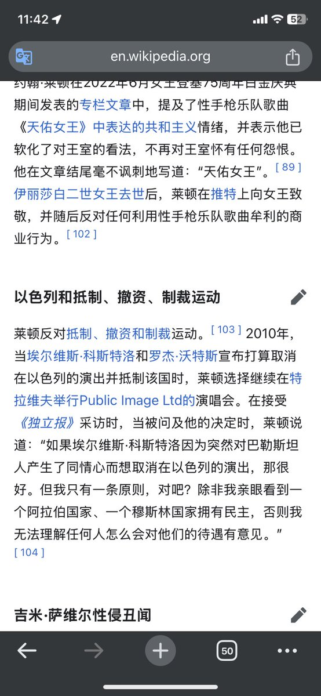

麦片
@maipianaini0930
@lin_dialog 他只是在借着朋克与反叛虚张声势，看他晚年就明白了


麦片
@maipianaini0930
一个七十年代玩世不恭的英国小痞子居然亲以公开支持maga我只感到一股震惊荡彻心底，社会这个傻逼太恶心了，可以把鲜活的人异化成目光昏黄保守的市侩。这种对自己只要活着终有一天也不可避免地会成为他们其中一员的恐惧感让我再一次想要死亡 https://t.co/AdtxlHJ4No
竹霖
@lin_dialog
烂牙本质上是个商人，他们知道这个乐队并不“朋克”，所以同意了一个不会贝斯的贝斯手 来让这个乐队更“朋克” 所以说真正的性手枪已经死在了1978